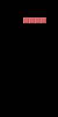
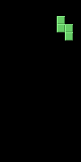
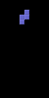

Tetris · Reinforcement Learning
Wie eine KI Tetris lernt.
Eine vollständige lokale RL-Anwendung mit visueller Policy, selbst definiertem Reward und echten Trainingsläufen.
Vorher · 10k00

Nachher · 1,2 Mio.01

01 · Das Lernprinzip
Lernen durch Rückmeldung.
Der Agent bekommt keine Regel wie „baue flach“. Er probiert Aktionen aus und lernt, welche Entscheidungen langfristig viel Reward bringen.
02 · Actor-Critic
Drei Ideen hinter jeder Entscheidung.
A2C und PPO kombinieren eine handelnde Policy mit einer bewertenden Value Function. Der Advantage verbindet beide beim Lernen.
„Welche Aktion sollte ich wählen?“ Sie erzeugt Wahrscheinlichkeiten für links, rechts, drehen und Drop.
„Wie viel zukünftiger Reward ist von diesem Zustand aus noch zu erwarten?“
War das Ergebnis besser als erwartet? Dann wird die gewählte Aktion wahrscheinlicher – sonst unwahrscheinlicher.
Training: Aktionen werden gesampelt – das Modell exploriert. Im Playground wählt
deterministic=True reproduzierbar die bevorzugte Aktion.Timestep: genau eine Environment-Interaktion, nicht ein ganzes Spiel. Bei parallelen Environments verteilen sich die Schritte auf mehrere Partien.

03 · Die Umgebung
Das Modell sieht nur Pixel.
Gymnasium übersetzt das Java-Spiel in eine standardisierte Lernaufgabe. Ein CNN erkennt räumliche Muster direkt im Spielfeldbild.
RGB · uint8
genau fünf Aktionen
ein vollständiges Spiel
Gymnasium ↔ Java-Tetris
← linksrechts →↶ drehen↷ drehen↓ drop
04 · Die Umsetzung
Fünf Schichten. Eine Lernschleife.
Jedes Modul hat genau eine Aufgabe – von der Bedienoberfläche bis zur eigentlichen Spiel-Engine.
PyTorch + CNNOpenCV + NumPySQLite + JSONTensorBoardImageIO
05 · Reward Design
Was bedeutet „gutes Tetris“?
Der Reward ist die eigentliche Aufgabenbeschreibung. Die KI optimiert diese Zahlen – nicht die menschliche Absicht dahinter.
Aktives Platzieren fördern.
Riskanten Turmbau bremsen.
Kompakte Strukturen fördern.
Das Hauptziel klar priorisieren.
1 gelöschte Zeile = 200 Drops
Die Zeilenkomponente dominiert das Lernsignal bewusst sehr stark.
Die Zeilenkomponente dominiert das Lernsignal bewusst sehr stark.
Grenze:
keine eigene Game-Over Logik
keine eigene Game-Over Logik
06 · Die Algorithmen
A2C oder PPO?
Beide sind Actor-Critic-Verfahren. Sie lernen aus demselben Reward, unterscheiden sich aber darin, wie vorsichtig sie ihre Policy aktualisieren.
A2C
Advantage Actor-Critic
- Lernstil: lernt direkt und schnell
- Daten: verwendet Erfahrungen einmal
- Stabilität: kann stärker schwanken
- Aufwand: weniger Rechenzeit
PPO
Proximal Policy Optimization
- Lernstil: lernt vorsichtiger
- Daten: verwendet Erfahrungen mehrfach
- Stabilität: meist kontrollierter
- Aufwand: mehr Rechenzeit
Ein fairer Vergleich braucht gleiche Timesteps, Reward-Version, Startbedingungen und Seeds.
07 · Fazit
Vom Pixel zum trainierten Modell.
Die Environment baut die Brücke.Sie verbindet Java-Tetris mit dem Lernalgorithmus.
A2C und PPO lernen aus Erfahrung.Beide optimieren Policy und Value Function aus demselben Signal.
Der Reward definiert das Ziel.Sein Design ist der wichtigste fachliche Hebel des Projekts.
Fragen?